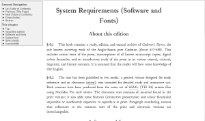
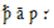

NOTE (2018): The information on this page refers to the 2005 CD-ROM as is provided for archival reasons only. The 2018 reissue has been optimised for use with any modern web browser.
§ S.1 This book contains a study, edition, and textual archive of Cædmon’s Hymn, the sole known surviving work of the Anglo-Saxon poet Cædmon (floruit 657-680). This includes critical texts of the poem, transcriptions of all known manuscript copies, digital colour facsimiles, and an introductory study of the poem in its various textual, cultural, linguistic, and literary contexts. It is assumed that the reader will have some knowledge of Old English.
§ S.2 The text has been published in two media: a printed volume designed for ready reference and an electronic (xhtml) text intended for detailed study and interactive use. Both versions have been produced from the same set of SGML (TEI P4) master files using Multidoc Pro style sheets. The electronic text contains all material found in the print volume; it also adds some features (interactive presentation and colour facsimiles) impossible or inordinately expensive to reproduce in print. Paragraph numbering ensures that references to the common text of the print and electronic versions are interchangeable.
§ S.3 The xhtml text can be read using commercially available internet browsers and is intended for general use. The SGML source text requires specialised computer knowledge and software and is not intended for the general reader. The two versions have identical content: the xhtml text was produced automatically from the SGML master.
§ S.4 To consult the display text, you will need the following software:
§ S.5 If your software is correctly configured, your screen should look approximately like this:
Figure 1: Screenshot showing layout of the xhtml version of this page.

§ S.6 If your fonts are correctly installed, you should see approximately similar characters in both the left and the right hand column of the following table:
| ā ƿ |
 |
If you do not see the same characters in both columns, you may need to (re)install Junicode on your computer. Consult your system manual for information on the correct installation of fonts on your system.
§ S.7 The appearance of the xhtml text is controlled by CSS style sheets. Separate style sheets are used for display and printing. The text is also in most cases readable with style sheets turned off or in browsers that are not CSS capable.
§ S.8 The xhtml text has been designed with accessibility in mind. It complies with applicable W3C standards and allows users to perform all required actions using a keyboard (or equivalent) rather than a mouse. Tables have been kept to a minimum and no images (except for manuscript facsimiles) contain textual content. Images that are included in the edition are all accompanied by shorter and longer prose descriptions on the “alt” and “longdesc” attributes. Care has been taken to ensure that documents are comprehensible in xhtml-compatible text-only readers.
[1]Current versions of Microsoft Internet Explorer are less compliant with international standards than other contemporary browsers. Care has been taken to ensure that the display text works well with the Windows version of this popular browser, although some functionality inevitably has been lost. MacIntosh versions of Internet Explorer currently have greater trouble with this display.
{kind=link}